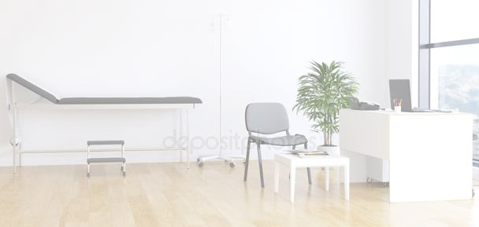

Consultorio

Equipamiento para CONSULTORIO MÉDICO: camilla de examinación, balanza, tensiómetro de pared, oxímetros, negatoscopios, mesas accesorias, vitrinas, escritorios. Mobiliario en melamina 18mm